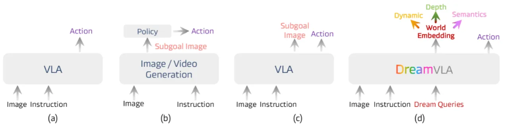
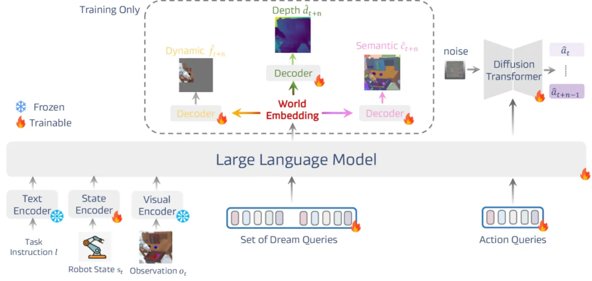
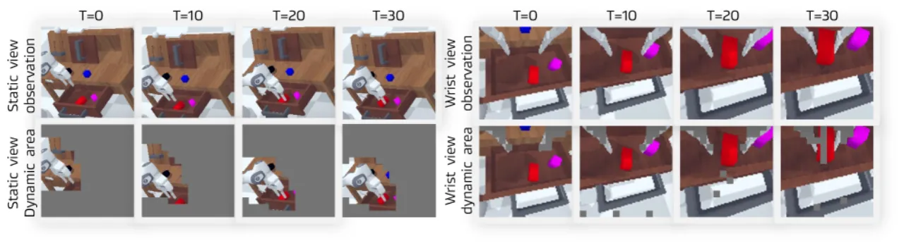
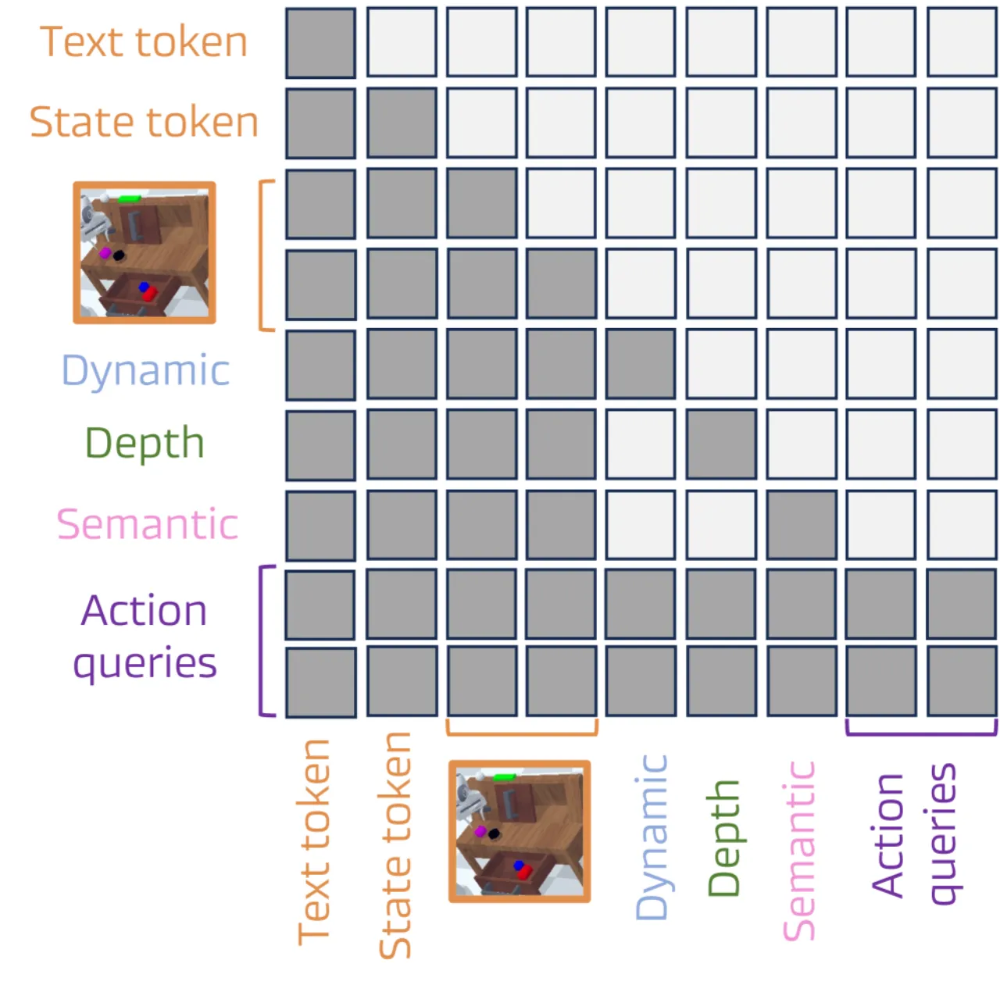
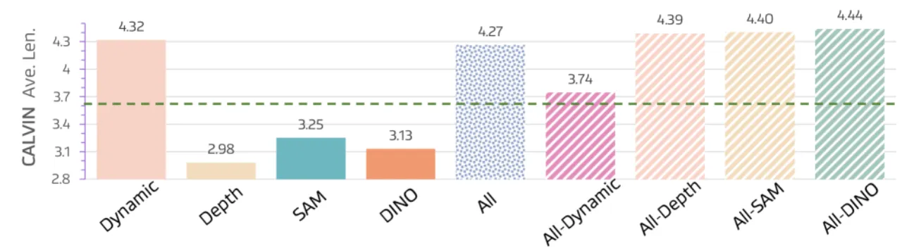

DreamVLA 让 VLA 模型在生成动作之前，先"梦想"出机器人任务中最关键的世界知识——动态区域、深度图与语义特征——从而大幅提升操作推理与泛化能力，在 CALVIN ABC-D 基准上取得 4.44 平均连续完成长度，超越所有已知方法。
当前 VLA 模型大多直接将视觉观测与语言指令映射为动作序列，缺乏对"未来会发生什么"的显式推理。已有研究尝试通过预测整帧图像或生成子目标来引入前瞻性，但这类方法引入了大量冗余像素信息、缺少显式 3D 知识，且对未来状态的高层理解十分有限，导致泛化能力不足。
"Prior work relies on redundant pixel information, lacks explicit 3D knowledge, and fails to capture high-level understanding of future states."

DreamVLA 将多模态输入（RGB 图像、语言指令、机器人状态）送入统一的 GPT-2 骨干 Transformer，通过两类可学习查询令牌——<dream>（世界知识预测）与 <action>（动作生成）——同步建模"下一步世界状态"和"下一步执行动作"。预测分支通过三个轻量解码器分别输出动态区域、深度图和语义特征，动作分支则使用 diffusion transformer 生成连续动作序列。

<dream> 查询经三个轻量解码器分别预测动态区域（CoTracker 监督）、深度图（Depth-Anything 监督）、语义特征（DINOv2 + SAM 监督）；<action> 查询送入 diffusion transformer 生成最终动作。DreamVLA 并不预测稠密光流，也不合成整帧未来图像，而是利用 CoTracker 提取"动态区域"——即随机器人末端执行器或其他可移动物体运动的像素集合，仅在这些区域上进行重建训练。这一设计大幅降低了无关背景像素的干扰："predicting dynamic regions alone delivers the greatest gains."

使用 Depth-Anything 生成深度监督信号，损失函数为尺度归一化 MSE（scale-normalized MSE loss）。预测未来深度场告知机器人下一步应移向何处、远离哪些潜在障碍物，为规划提供显式 3D 知识。
结合 DINOv2 和 SAM 的特征，通过对比学习 InfoNCE loss 进行监督。语义预测教会模型"哪些物体/区域对任务最重要"，提供目标物体身份与可操作性等高层上下文，引导目标选择与抓取决策。
为防止不同查询类型之间的信息泄露，DreamVLA 在自注意力层中引入分块掩码机制（block-wise structured attention）。如图 4 所示，<dream> 查询与 <action> 查询各自只能与上下文 token 及同类查询交互，而不能相互"窥视"，从而确保每个预测头的训练信号干净且信息不对称。消融实验显示，去除该机制使平均长度从 4.44 降至 3.75（下降 0.69）。

在三个基准上评估：CALVIN ABC-D（语言条件多任务操作，5 步连续评估）、LIBERO（Spatial / Object / Goal / Long 四个子集）以及真实 Franka Panda 机器人（pick、place、drawer 三类任务）。
| 方法 | T1 | T2 | T3 | T4 | T5 | Avg. Len. |
|---|---|---|---|---|---|---|
| Roboflamingo | 82.4 | 61.9 | 46.6 | 33.1 | 23.5 | 2.47 |
| Susie | 87.0 | 69.0 | 49.0 | 38.0 | 26.0 | 2.69 |
| GR-1 | 85.4 | 71.2 | 59.6 | 49.7 | 40.1 | 3.06 |
| 3D Diffusor Actor | 92.2 | 78.7 | 63.9 | 51.2 | 41.2 | 3.27 |
| OpenVLA | 91.3 | 77.8 | 62.0 | 52.1 | 43.5 | 3.27 |
| RoboDual | 94.4 | 82.7 | 72.1 | 62.4 | 54.4 | 3.66 |
| UNIVLA | 95.5 | 85.8 | 75.4 | 66.9 | 56.5 | 3.80 |
| Pi0 | 93.8 | 85.0 | 76.7 | 68.1 | 59.9 | 3.92 |
| UP-VLA | 92.8 | 86.5 | 81.5 | 76.9 | 69.9 | 4.08 |
| Robovlm | 98.0 | 93.6 | 85.4 | 77.8 | 70.4 | 4.25 |
| Seer | 96.3 | 91.6 | 86.1 | 80.3 | 74.0 | 4.28 |
| VPP | 95.7 | 91.2 | 86.3 | 81.0 | 75.0 | 4.29 |
| DreamVLA（本文） | 98.2 | 94.6 | 89.5 | 83.4 | 78.1 | 4.44 |
| 方法 | Spatial | Object | Goal | Long | Average |
|---|---|---|---|---|---|
| Diffusion Policy | 78.3 | 92.5 | 68.3 | 50.5 | 72.4 |
| Octo | 78.9 | 85.7 | 84.6 | 51.1 | 75.1 |
| OpenVLA | 84.7 | 88.4 | 79.2 | 53.7 | 76.5 |
| SpatialVLA | 88.2 | 89.9 | 78.6 | 55.5 | 78.1 |
| CoT-VLA | 81.1 | 87.5 | 91.6 | 87.6 | 69.0 |
| DreamVLA（本文） | 97.5 | 94.0 | 89.5 | 89.5 | 92.6 |

关键消融结论（均在 CALVIN ABC-D 上测量 Avg. Len.）：
当前框架主要针对平行夹爪机器人手臂设计，尚不支持灵巧手（dexterous hand）等更复杂的末端执行器。作者计划"add dexterous-hand demonstrations with rich contact annotations"以扩展适用范围。
模型的世界知识（动态区域、深度、语义）均基于 RGB 图像衍生，缺乏原生的 3D 点云或触觉信号。作者提出"introduce 3D point clouds and spatial information—and fuse them into volumetric world states"作为改进方向。
训练数据涵盖的几何形状和材质种类有限（"trained on scenes with limited geometric and material diversity"），可能导致模型在分布外的真实环境中泛化能力不足。作者计划通过扩展数据采集与在线微调（on-policy fine-tuning）来增强长程鲁棒性。